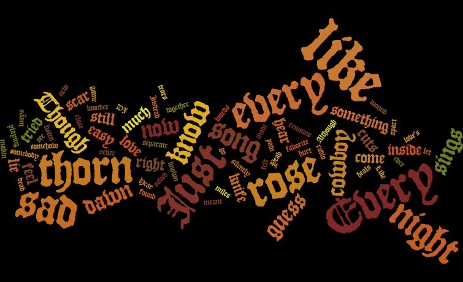

Every Rose Has Its Thorn by Poison

Write UP
Describe the data structure you used to calculate the word frequencies.
Why did you choose that data structure?
What benefits does your selected data structure offer?
Is there anything you’d want to improve if you had more time to work on the project?
How might you scale the project?
Describe context and rationale for selecting the about the song(s) presented, here are some thought questions to get you started:
Why did you choose this particular song?
Was the song ever a billboard top hit? When?
What were the top words found? Was it a surprise?
Can you find the value of each word? Of the top words? This would involve researching sales and calculating price per word.
• Hashmap datastructure
• Using a hashmap to convert the input, giving each word a key and having its
value increase for each count. Added another map for the stop words and used
to compare the lists removing all elements from the initial map.
• Using a hashmap, the storing of the word-key allows faster access to adding the count-value
• Design
• the song chosen was every rose has its thorn by poison
• one of my personal favorite popular songs
• US Billboard Hot 100 Peaked at #1 on 12.24.1988
• the top words found came at no surprise being "i","every","has"
We both lie silently still in the dead of the night
Although we both lie close together we feel miles apart inside
Was it something I said or something I did?
Did my words not come out right?
Though I tried not to hurt you
Though I tried
But I guess that's why they say
Every rose has its thorn
Just like every night has its dawn
Just like every cowboy sings a sad sad song
Every rose has its thorn
Yeah it does
I listen to our favorite song playing on the radio
Hear the DJ say love's a game of easy come and easy go
But I wonder does he know
Has he ever felt like this
And I know that you'd be here right now
If I could have let you know somehow
I guess
Every rose has its thorn
Just like every night has its dawn
Just like every cowboy sings a sad sad song
Every rose has its thorn
Though it's been a while now
I can still feel so much pain
Like a knife that cuts you the wound heals
But the scar, that scar remains
I know I could have saved a love that night
If I'd known what to say
Instead of makin' love
We both made our separate ways
And now I hear you found somebody new
And that I never meant that much to you
To hear that tears me up inside
And to see you cuts me like a knife
I guess
Every rose has its thorn
Just like every night has its dawn
Just like every cowboy sings a sad sad song
Every rose has its thorn
last modified .